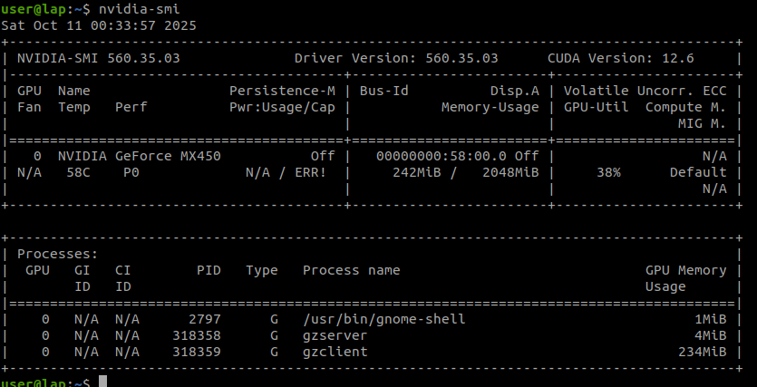

classic
dev
devcontainer
docker
gazebo
vscode
Set gazebo classic dev environment using docker and vscode
Simulation / Gazebo Classic
Docker with nvidia support
Docker runtime on host
install nvidia-container-toolkit on host
Config docker run time
info | grep -i runtime
#
Runtimes: runc io.containerd.runc.v2
Default Runtime: runc
nvidia-ctk runtime configure --runtime= docker
systemctl restart docker
runtime changed to nvidia info | grep -i runtime
Runtimes: nvidia runc io.containerd.runc.v2
/etc/docker/daemon.json
#
{
"runtimes" : {
"nvidia" : {
"args" : [] ,
"path" : "nvidia-container-runtime"
}
}
}
Dev environment using docker
Docker
FROM ubuntu:22.04
ENV DEBIAN_FRONTEND = noninteractive
# Install language
RUN apt-get update && apt-get install -y --no-install-recommends \
locales \
&& locale-gen en_US.UTF-8 \
&& update-locale LC_ALL = en_US.UTF-8 LANG = en_US.UTF-8 \
&& rm -rf /var/lib/apt/lists/*
ENV LANG = en_US.UTF-8
# Install timezone
RUN ln -fs /usr/share/zoneinfo/UTC /etc/localtime \
&& export DEBIAN_FRONTEND = noninteractive \
&& apt-get update \
&& apt-get install -y --no-install-recommends tzdata \
&& dpkg-reconfigure --frontend noninteractive tzdata \
&& rm -rf /var/lib/apt/lists/*
RUN apt-get update && apt-get install -y --no-install-recommends \
bash-completion \
build-essential \
cmake \
gdb \
git \
tmux \
tmuxp \
pkg-config \
&& rm -rf /var/lib/apt/lists/*
COPY .devcontainer/.tmux.conf /etc/tmux.conf
RUN rosdep init || echo "rosdep already initialized"
ARG USERNAME = user
ARG USER_UID = 1000
ARG USER_GID = $USER_UID
# Create a non-root user
RUN groupadd --gid $USER_GID $USERNAME \
&& useradd -s /bin/bash --uid $USER_UID --gid $USER_GID -m $USERNAME \
# Add sudo support for the non-root user
&& apt-get update \
&& apt-get install -y sudo \
&& echo $USERNAME ALL = \( root\) NOPASSWD:ALL > /etc/sudoers.d/$USERNAME \
&& chmod 0440 /etc/sudoers.d/$USERNAME \
&& rm -rf /var/lib/apt/lists/*
RUN apt-get update && apt-get install -y --no-install-recommends \
libopencv-dev \
libzmq3-dev \
libczmq-dev \
libmsgpack-dev \
wget \
curl \
gnupg2 \
gnupg \
ca-certificates \
gnupg \
lsb-release \
curl \
&& rm -rf /var/lib/apt/lists/*
# Add the OSRF GPG key to a new keyring directory
RUN mkdir -p /etc/apt/keyrings && \
wget https://packages.osrfoundation.org/gazebo.gpg -O /etc/apt/keyrings/osrf-archive-keyring.gpg
# Add the Gazebo repository line, referencing the new keyring file
RUN echo "deb [arch= $( dpkg --print-architecture) signed-by=/etc/apt/keyrings/osrf-archive-keyring.gpg] http://packages.osrfoundation.org/gazebo/ubuntu-stable $( lsb_release -cs) main" | tee /etc/apt/sources.list.d/gazebo-stable.list > /dev/null
# Install gazebo
RUN apt-get update && apt-get install -q -y \
gazebo \
libgazebo-dev \
&& rm -rf /var/lib/apt/lists/*
RUN apt-get update && apt-get install -y --no-install-recommends \
mesa-utils \
nvtop \
&& rm -rf /var/lib/apt/lists/*
ENV DEBIAN_FRONTEND =
devcontainer.json
{
"name" : "gz11" ,
"dockerComposeFile" : "../docker-compose.yaml" ,
"service" : "gz" ,
"shutdownAction" : "stopCompose" ,
"workspaceFolder" : "/workspace" ,
"customizations" : {
"vscode" : {
"extensions" : [
"ms-python.python" ,
"ms-vscode.cpptools" ,
"twxs.cmake" ,
"redhat.vscode-xml" ,
"redhat.vscode-yaml" ,
"albert.tabout" ,
"actboy168.tasks" ,
"streetsidesoftware.code-spell-checker" ,
"mhutchie.git-graph" ,
"dlech.chmod" ,
"smilerobotics.urdf"
],
"settings" : {}
}
}
}
docker-compose.yaml
services :
gz :
build :
context : .
dockerfile : .devcontainer/Dockerfile
user : "user"
volumes :
- .:/workspace:cached
- /tmp/.X11-unix:/tmp/.X11-unix:rw
- /dev/dri:/dev/dri # keep for OpenGL context
deploy :
resources :
reservations :
devices :
- driver : nvidia # explicitly use NVIDIA runtime
count : all
capabilities : [ gpu ]
hostname : gz
extra_hosts :
- "gz:127.0.0.1"
network_mode : host
stdin_open : true
tty : true
environment :
- DISPLAY=${DISPLAY}
- QT_X11_NO_MITSHM=1
- NVIDIA_VISIBLE_DEVICES=all
- NVIDIA_DRIVER_CAPABILITIES=all
- __NV_PRIME_RENDER_OFFLOAD=1
- __GLX_VENDOR_LIBRARY_NAME=nvidia
runtime : nvidia
check OpenGL
| grep "OpenGL vendor"
#
vendor string: NVIDIA Corporation
Run
fps
The fps on my machine is about 62
pmap
The pmap command is a Linux utility that reports the memory map of a process. The memory map provides a detailed look at how a process uses memory, including all of the components it uses, such as libraries, executable code, and data
-x $( pgrep gzclient) | grep "nvidia"
nvidia-smi
The process gzclient and gzserver shown on the host but not from the docker image shell why?

TODO: simple app and config the compiler and cmake
Reference